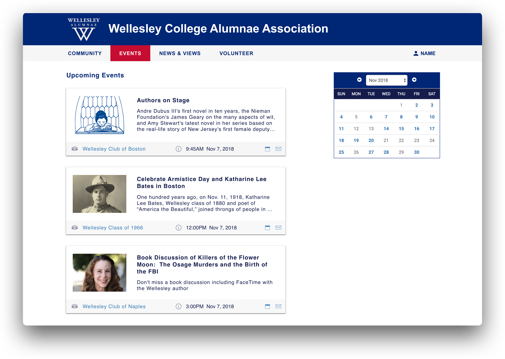

Goals
Alleviate cognitive load and expedite decision making processes by highlighting only the most important information
Fluid Navigation
Make features more discoverable and accessible. Alums should easily be able to find what they’re looking for
Personalize
Create an experience that’s completely focused on the user’s individual needs and goals
Design Process
Brainstorming
- Are the steps in your user flow going to help them or discourage them from progressing?
- What problems is the platform attempting to solve? How effective are the current solutions to these problems?
- What are alums most interested in doing when they visit the platform?
- When are alums using Handshake, and why?
- How does WCAA compare to its competitors?
- How can I quickly find specific information or product I want?
User Research
These are highlights from email surveys conducted with Wellesley College alumnae between April 6 and April 20, 2018. The Wellesley College Association sent an email to approximately 28,000 alumnae. I compiled survey results from Survey Monkey by creating data visualizations using the class colors.
Although these results were not aimed for the purpose of this re-designing exercise, I was allowed to use this information to gain insight.
{kind=link}
{kind=link}
{kind=link}
{kind=link}
{kind=link}
{kind=link}
{kind=link}
{kind=link}
{kind=link}
{kind=link}
{kind=link}
Final Design
Home Page
Events Page 